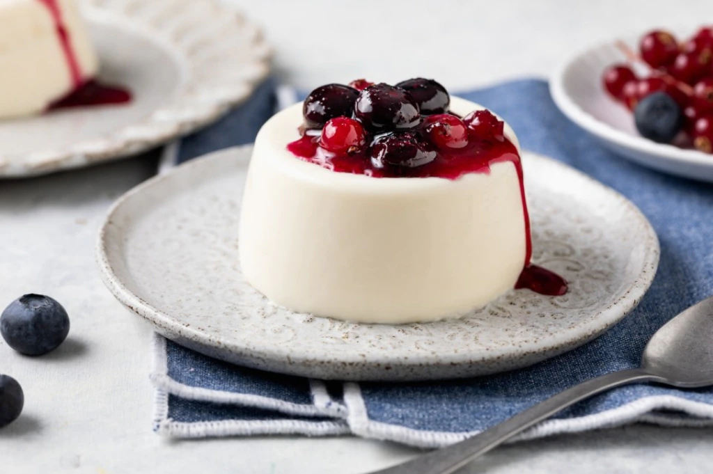

Ingredients:
- 1 packet unflavored gelatin
- 3 cups heavy cream
- 2 teaspoons vanilla extract
- 1/2 cup of sugar
Steps
- Mix a small part of the cream with the gelatin pack, and leave the mixture aside to rest.
- Bring the remaining cream to a boil using a saucepan. Mix the sugar in. Remove the pan from the heat and
stir in the gelatin mixture and the vanilla.
- Divide the mixture in among six small glasses. Chill the glasses, covered with plastic wrap, al least 4
hours or overnight.
- Serve whenever you want. You can top the panna cotta with all your favourite toppings: caramel,
chocolate or red fruit. The only limit is your immagination.